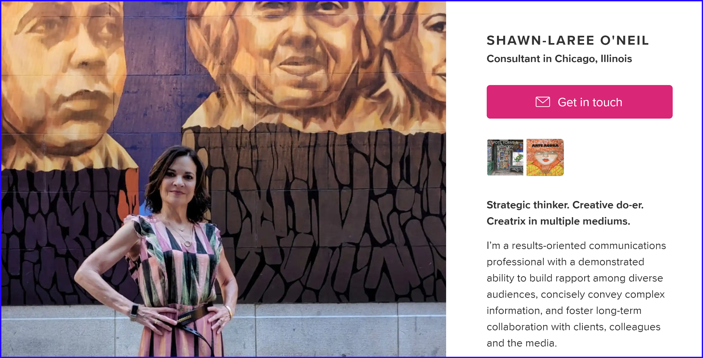

Partnership extends our services.
How stories are told motivates change and influences outcomes. Through successful communication strategies, I have helped my clients stand out from their competitors. I build and support brand awareness and engagement, bolster business goals, drive revenue, and produce results. From scrappy start-ups to huge multinationals—through targeted content, media relations, VIP events, unexpected crises, and international conventions—I help others succeed.
Contact SL